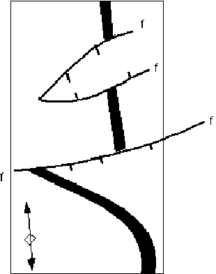
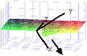

Tutorial 9: Using real geophysical data
Exercise 9: Constraining events locations to known data.
In this example we will demonstrate how to use an existing magnetic dataset to constrain the position and geometry of the Noddy events.
1) First we need to be able to read in the pre-existing magnetic data. In order to do this we convert a raw ASCII grid file into a Noddy .mag file for further use. Select Tools->Import Image->ASCII You will then be presented with a window that allows you to provide additional detail about the image. For the moment the only data that need to be changed are the cell size (50 m) the Number of Rows (285) and the Number of Columns (160). Then click on OK and in the file browser choose the file called data.asc and save the newly converted file as data.mag.
2) Next we need to identify this newly created data as a reference image for the modelling. First change the Geophysics Scale to 2 in the Project Options window (this keeps the image to a reasonable size. Then select File->Load Reference Images->Magnetics and load in the image data.mag. This will then be displayed in a window as a normal geophysics image that may be viewed as a raster or colour contour image, have profiles drawn etc.
3) Now load in a history file called model.his I have created that will be used to try to model the folded fault block located at 5000,5000. This history provides the stratigraphy and the late folding event which are both obvious in the geology map below, but leaves the early faulting up to you. First of all create a block diagram to have a look at the model as it stands.

4) To create the fault select a fault icon from the Toolbar and place it between the Base Stratigraphy and the Fold icons in the History window. The fault definition window will open up and first of all we now to decide what type of fault we need to explain the fault block geometry seen in the magnetics. Try putting in a Translational normal fault dipping 60 to 180, and position it at 5000,5000,5000.
In the preview window you should now see this fault plane. In order to see the effect of this fault on the Base Stratigraphy alone (ie without the later folding) select Block from the menu at the lower right of the Preview area. This shows the south (hanging wall) block sliding off into oblivion. In order to see the combined effect of the faulting and folding, select Full from the left menu in the Preview area.
We can now also preview the magnetic anomaly image for this geology, by selecting Magnetics from the right menu in the Preview area. This creates a full magnetics calculation for a cube size 5/3 times cube size defined in the Block View Options window, and provides the range of TMI values present in the area.
5) This fault accounts for some of the fault block behaviour, but does not explain the narrowing of the block to the West. This suggests that perhaps we need a fault which has a slip vector that decays to the West. We can achieve this by selecting Elliptical Fault from the Form:Geometry menu in the fault definition window. Since elliptical faults have a narrow extent, it is not at first obvious where the fault is in the Full:Block preview. To make the fault more obvious, increase the Ellipsoid Axis dimensions (click on the icon to bring up the relevant parameters) until it appears in the preview. (If the refresh rate of the preview is too slow, disable it by clicking on the On button in the lower right hand corner of the preview are, and turn it on when you next want to see the block). These axes define the ellipsoidal volume within which there will be slipped rock, with X parallel to the slip direction in the fault plane, Z perpendicular to the slip direction in the fault plane, and Y normal to the fault plane.

The X,Y,Z position now defines the centre of the ellipsoid (which the fault passes through).
6) Once the Elliptical fault is quite large, you should be able to see the fault block in the Preview window again. As a check that the magnetics are starting to look reasonable, and also to see the relationship between the magnetics and the geology, select Magnetic + Map from the right menu in the preview area. Now exit from the Fault definition window and calculate a full magnetics image.
7) We can produce a composite image to check on the exact placement and orientation of the fault. To do this select Geophysics->Difference With Reference->Magnetics and reload in the newly created .mag file. The resulting image is the reference image subtracted from the model image. Both the model and actual fault positions show up quite clearly in this image, so repositioning and re-orienting the fault becomes quite simple. This difference image is also available in the Preview window, but is much smaller and harder to deal with. Once the fault is positioned and oriented correctly, you can start to worry about the Ellipsoid Axis dimensions so that the shape of the fault block matches the observed data.
Noddy · open source under the MIT licence · Loop3D/noddy_qt